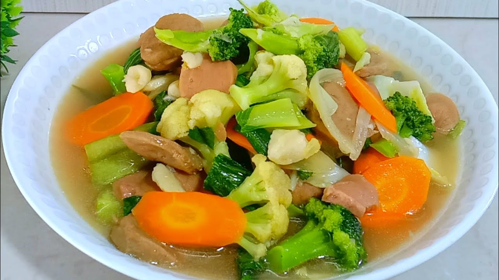

Resep Makanan

Seblak Ceker
Bahan-bahan:
- 500 gram ceker ayam
- 100 gram kerupuk seblak
- 2 siung bawang putih, cincang halus
- 2 siung bawang merah, cincang halus
- 1 sdm saus sambal
- 1 sdt garam
- 1/2 sdt gula pasir
- 500 ml air
- Minyak untuk menumis
Cara Membuat:
- Rebus ceker ayam hingga empuk, tiriskan.
- Tumis bawang putih dan bawang merah hingga harum, masukkan saus sambal.
- Tambahkan air, garam, dan gula, masak hingga mendidih.
- Masukkan ceker ayam dan kerupuk, masak hingga semua tercampur rata.
- Sajikan hangat.

Tumis Jamur Tiram
Bahan-bahan:
- 200 gram jamur tiram
- 1 siung bawang putih, cincang
- 1 sdm kecap manis
- 1/2 sdt garam
- Minyak untuk menumis
Cara Membuat:
- Tumis bawang putih hingga harum.
- Masukkan jamur tiram dan tumis hingga layu.
- Tambahkan kecap manis dan garam, masak hingga matang.
- Sajikan dengan nasi putih hangat.

Telur Ceplok
Bahan-bahan:
- 2 butir telur
- Minyak untuk menggoreng
- Garam dan merica secukupnya
Cara Membuat:
- Panaskan minyak di wajan.
- Pecahkan telur dan goreng hingga matang sesuai selera.
- Beri garam dan merica di atas telur, sajikan dengan nasi atau roti.

Cumi Sambal Hijau
Bahan-bahan:
- 500 gram cumi-cumi
- 5 cabai hijau besar
- 3 siung bawang putih
- 1 sdt garam
- Minyak untuk menumis
Cara Membuat:
- Tumis bawang putih dan cabai hijau hingga harum.
- Masukkan cumi-cumi, tambahkan garam dan tumis hingga matang.
- Sajikan hangat dengan nasi putih.

Oseng Tempe
Bahan-bahan:
- 200 gram tempe, potong dadu
- 2 siung bawang putih, cincang
- 1 sdm kecap manis
- 1/2 sdt garam
- Minyak untuk menumis
Cara Membuat:
- Tumis bawang putih hingga harum.
- Masukkan tempe dan tumis hingga berwarna kecokelatan.
- Tambahkan kecap manis dan garam, aduk rata.
- Sajikan dengan nasi hangat.

Tumis Buncis
Bahan-bahan:
- 200 gram buncis, iris serong
- 2 siung bawang putih, cincang
- 1 sdm saus tiram
- Garam secukupnya
- Minyak untuk menumis
Cara Membuat:
- Tumis bawang putih hingga harum.
- Masukkan buncis dan tumis hingga setengah matang.
- Tambahkan saus tiram dan garam, aduk rata.
- Sajikan hangat.

Tumis Kangkung
Bahan-bahan:
- 200 gram kangkung
- 2 siung bawang putih, cincang
- 1 sdm saus tiram
- Garam secukupnya
- Minyak untuk menumis
Cara Membuat:
- Tumis bawang putih hingga harum.
- Masukkan kangkung dan tumis hingga layu.
- Tambahkan saus tiram dan garam, aduk rata.
- Sajikan hangat.

Capcay
Bahan-bahan:
- 100 gram wortel, potong korek api
- 100 gram kembang kol
- 100 gram sawi hijau
- 2 siung bawang putih, cincang
- 1 sdm kecap asin
- 1/2 sdt garam
- Minyak untuk menumis
Cara Membuat:
- Tumis bawang putih hingga harum.
- Masukkan wortel, kembang kol, dan sawi hijau, tumis hingga matang.
- Tambahkan kecap asin dan garam, aduk rata.
- Sajikan hangat.

Terong Balado
Bahan-bahan:
- 2 buah terong ungu, potong-potong
- 5 cabai merah besar
- 2 siung bawang merah
- 1 siung bawang putih
- 1 sdt garam
- Minyak untuk menggoreng
Cara Membuat:
- Goreng terong hingga matang.
- Haluskan cabai merah, bawang merah, dan bawang putih.
- Tumis bumbu halus hingga harum, tambahkan garam.
- Masukkan terong goreng dan aduk rata.
- Sajikan hangat.